Rendered from the real Luau output: tools/dump_gui.luau builds the menu in the Lune mock and resolves the layout; tools/render_preview.py draws it with web stand-ins for the Roblox faces (Press Start 2P, Roboto Mono, Noto Sans JP for the CJK fallback). Not a Studio capture. Each image links to its HTML. Contact sheet: preview-sheet.png. Style board: style-board.html. Notes: DESIGN.md.
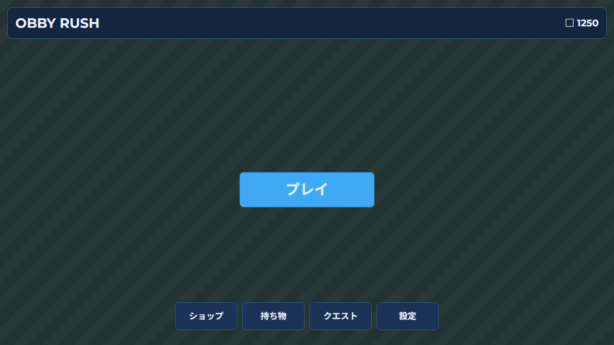
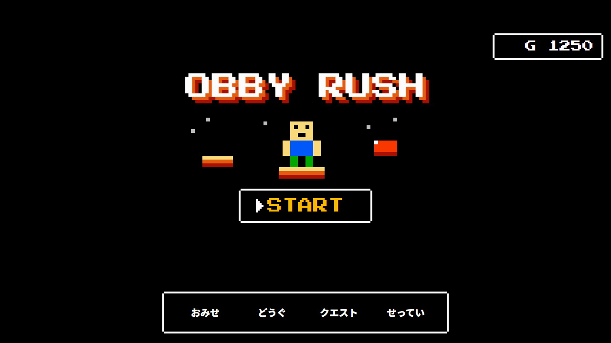
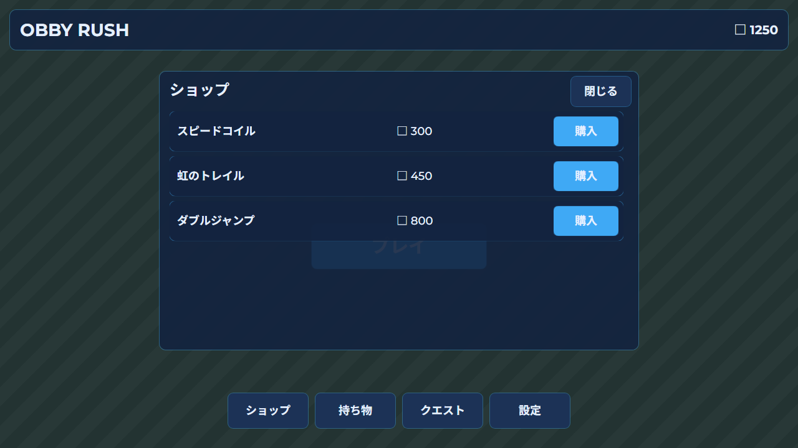
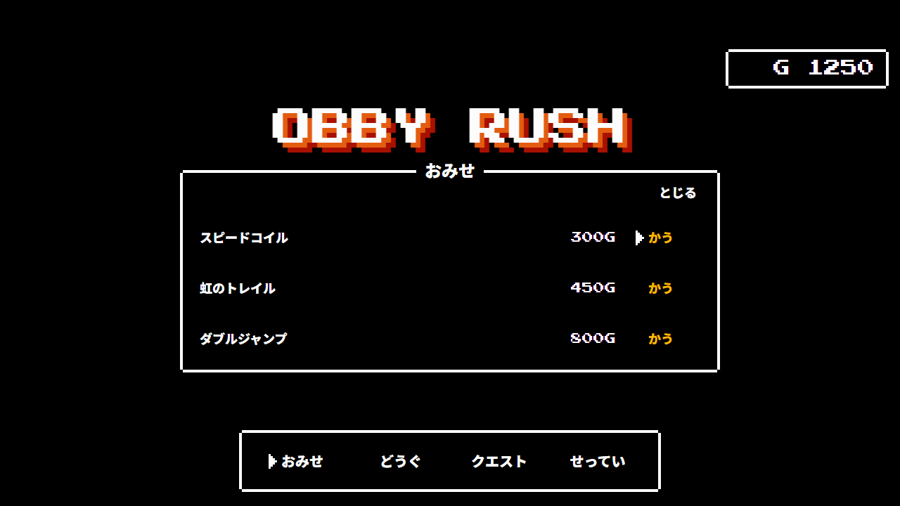
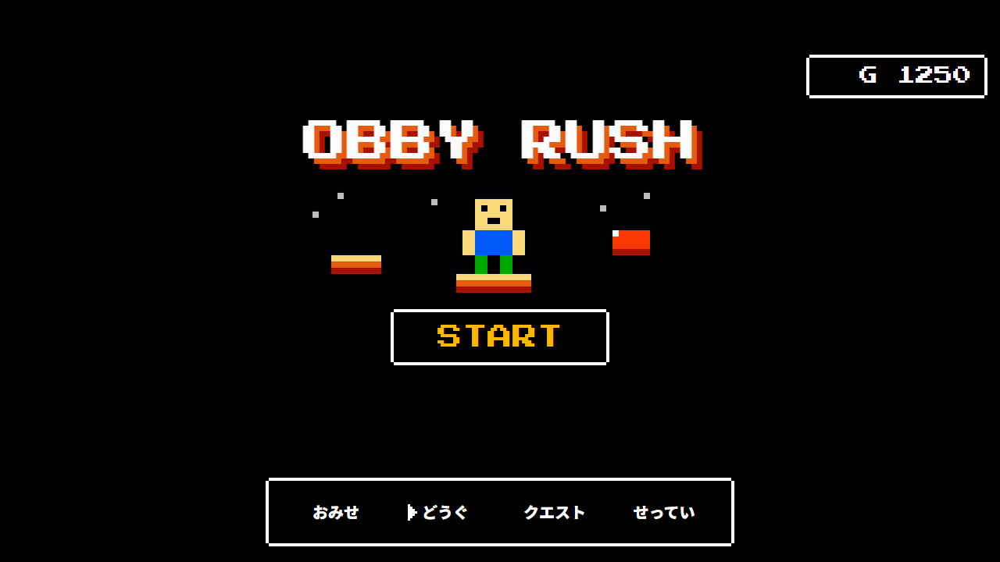
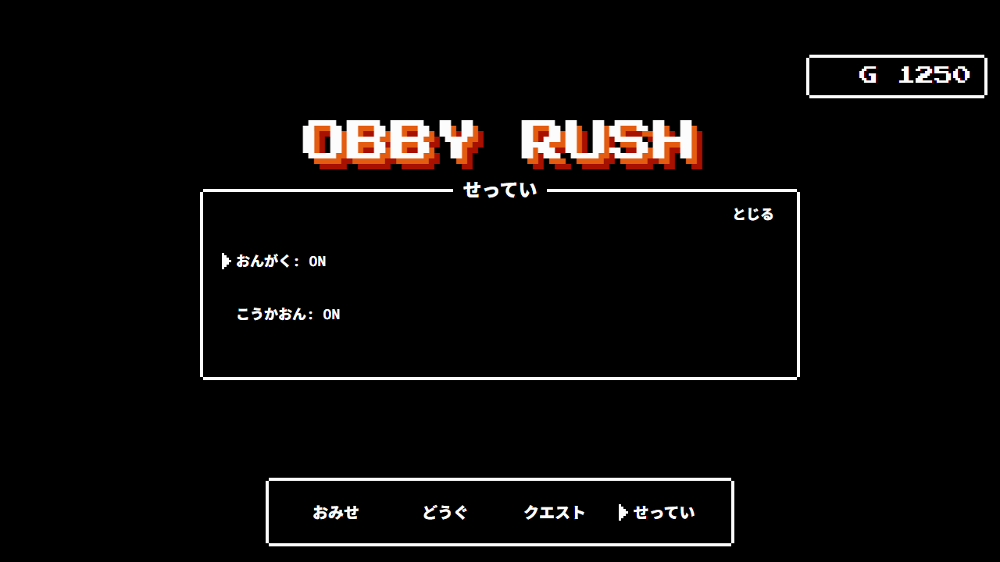
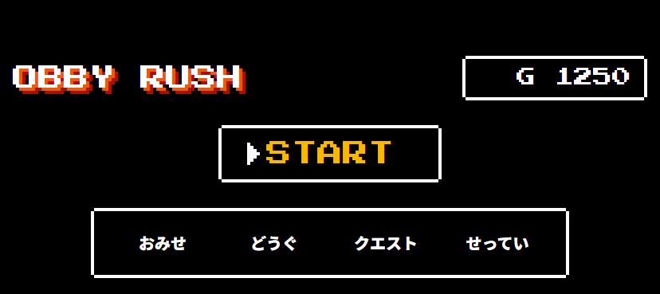
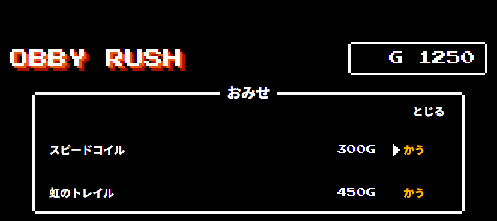
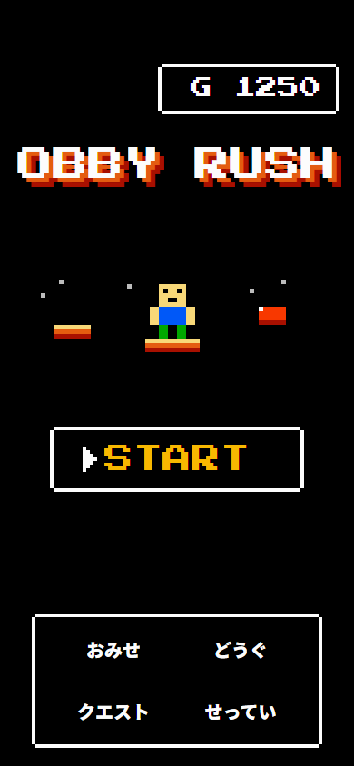
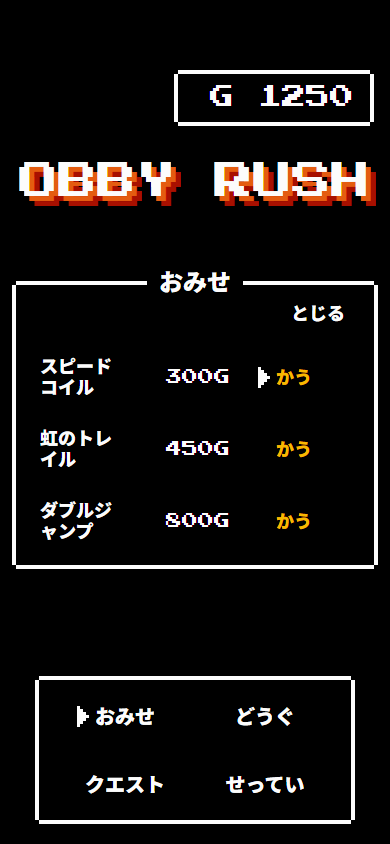
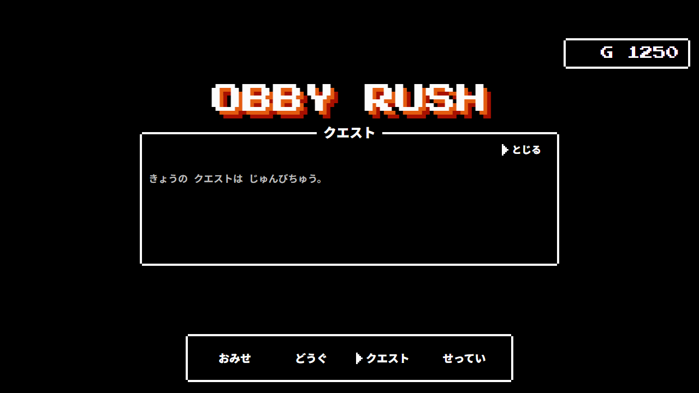